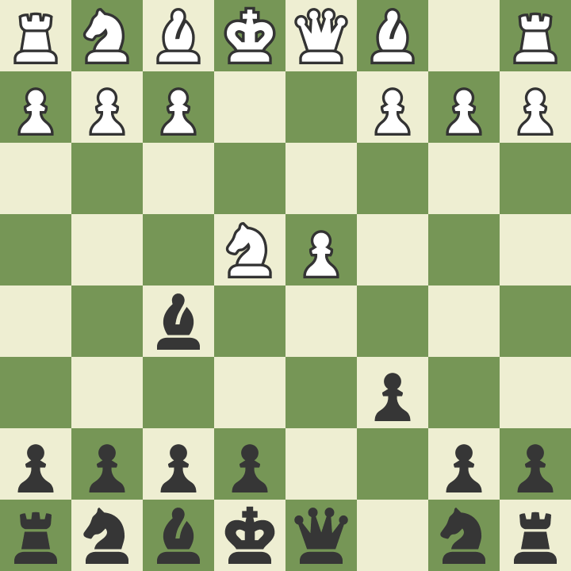

Apertura 1
Nos encontramos con una de las variantes más sólidas que existen para el jugador con negras. Desde Vladimir Kramnik que, usando esta línea, consiguió vencer a Garry Kasparov y ponerse la corona mundial, hasta Alpha Zero, que concluyó que es la defensa (objetivamente) más fuerte que tiene el segundo jugador a su disposición. Marcada por un fuerte corte posicional, el jugador con negras invita a su rival a entrar en un final en donde espera que la pareja de alfiles compense su peor estructura. ¡PERO CUIDADO! Que sea un final sólido no implica que sean tablas muertas...
Apertura 2
Nos plantamos justo en un esquema muy popular. Mijaíl Botvinnik fue uno de los grandes impulsores de este sistema (donde le gustaba mucho la maniobra bqe8-bqh5), y gracias a ello recolectó infinidad de puntos. Jugadores como Korchnoi y Karpov también la emplearon regularmente. Cabe destacar que el mismo Magnus Carlsen ha empleado en algunas ocasiones esta formación con un éxito notable, al igual que muchos GMs a lo largo de la historia.
Apertura 3
La idea esta defensa es muy parecida a la Defensa Francesa, sin embargo, queremos desarrollar nuestro alfil de casillas blancas por fuera de la cadena de peones. La variante Capablanca ha sido la más popular a lo largo de la historia y la que mejor representa la naturaleza de esta sólida defensa. En la actualidad, el mayor abanderado de esta defensa es Vladimir Artemiev, quien está inyectándole vida con nuevas ideas. Sin embargo, está claro que su época de esplendor fue con Anatoly Karpov y sus virtuosas victorias de corte posicional. Otros jugadores notables como Anand y Topalov la utilizan ocasionalmente.
Apertura 4
Nos situamos en una de las líneas más agudas en la Defensa Francesa, y con un contexto histórico muy notable. El propio Bobby Fischer sufrió mucho con blancas cuando tenía que enfrentarse a este sistema, al igual que muchos otros como Kasparov y Tal. Una línea de corte táctico pero que esconde un profundo concepto posicional: los peones doblados. Simplemente mágico el recorrido que uno puede hacer cuando comienza a estudiar esta variante.
Apertura 5
Nos adentramos en el caótico mundo de la Variante Botvinnik en la defensa Semieslava. Esta es una de las grandes aportaciones del campeón del mundo Mikhail Botvinnik la cual se considera la variante más compleja y teórica de la defensa Semieslava. No han sido pocos los casos en los que el jugador con blancas intenta evitarla a toda costa. Tras el sacrificio de peón, el jugador con blancas busca un juego muy agudo al estar el bk contrario en el centro. ¡No apto para jugadores sensibles! Unos de los grandes exponentes en la actualidad es la leyenda del ajedrez "Vishy" Anand y el siempre combativo y agresivo Alexei Shirov (¡Su libro "Fuego en el tablero" expone cientos de partidas con esta variante!) y a día de hoy se siguen encontrando novedades teóricas en la jugada... ¡30! Sin duda una Defensa que merece estar en este ranking.
Apertura 6
Antigua pero de gran importancia teórica, La Variante Tartakower (1.d4, d5 2.c4, e6 3.wnf3, bnf6 4.wnc3, bbe7 5.wbg5, 0-0 6.e3, h6 7.wbh4, b6) debe su nombre a Savielly Tartakower y ha sido una de las aperturas con las que los Maestros del pasado comenzaron a profundizar.. A pesar de que se plantea en la jugada 7 del negro es bastante fácil llegar hasta aquí. Todos los campeones mundiales han pasado por esta variante, y la clave de la misma es la solución del problema del bb de casillas blancas, que se erradica con el movimiento de peón a b6. Sin embargo, el precio a pagar es la posible debilidad del peón de c y, en caso ulterior, los peones colgantes que se pueden originar.
Apertura 7
Producto también de la escuela hipermoderna (se controla el centro con la presión de nuestras piezas... ¡Cosa impensable en los comienzos de la teoría del ajedrez!), ha sido, fue, y probablemente será una de las aperturas más profundas y estratégicas contra el peón de dama. Al jugar 4.wqc2, se erradica totalmente el problema de los peones doblados que puede llegar a causar el contrario. Sin embargo, el contra juego del segundo jugador se centrará en la pérdida de tiempos de la dama e intentará presionar lo máximo posible el centro.
Apertura 8
Tras las jugadas 1.d4, bnf6, 2.c4 g6 3.wnc3 bbg7 4.e4, d6 queda sobre el tablero la Defensa India de Rey. Muchas son las ideas y variantes que se han intentado contra este esquema, pero hay una que destaca notablemente sobre el resto, la Variante Mar del Plata (...5.wnf3 0-0 6.wbe2 e5 7.0-0 bnc6). La idea principal y básica de esta línea es que, al estar el centro de peones completamente cerrado, cada jugador jugará con todas su fuerzas en los flancos, lo que se convertirá en toda una carnicería llena de sacrificios y partidas memorables. En el torneo del Mar del plata (1953), Najdorf perdió con Gligorić y entabló con Trifunović (estas dos partidas con blancas), quienes idearon un plan que mejora al que aplicaron Bronstein y Aronin. Por todo esto, a esta variante a veces se le llama la variante del Mar del Plata.
Apertura 9
La variante Najdorf de la Defensa Siciliana es una de las aperturas de ajedrez más respetadas y profundamente estudiadas. Modern Chess Openings lo llama el "Cadillac" o "Rolls Royce" de las aperturas de ajedrez. La apertura lleva el nombre del gran maestro polaco-argentino Miguel Najdorf el cual fue de los primeros jugadores en experimentar con este sistema. Se plantea tras 1.e4 c5 2.wnf3 d6 3.d4 cxd4 4.wnxd4 bnf6 5.wnc3 a6, y su mayor virtud es la ENORME flexibilidad que tiene el segundo jugador para elegir el mejor esquema contra el ataque blanco. Goza de una enorme popularidad (y salud) y a día de hoy se sigue practicando y jugando al más alto nivel. Si quieres jugar a ganar contra el peón de rey... ¡Esta es tu opción! Sobra decir que una amplia gama de campeones del mundo han usado, satisfactoriamente, esta apertura. Cabe destacar la curiosa historia de la "Tragedia Argentina" y las memorables victorias de Kasparov, Fischer, entre muchísimos otros.
Apertura 10

La Ruy López (también conocida como la Apertura Española) es una apertura de ajedrez que disfrutan los ajedrecistas desde el nivel más básico hasta el campeón mundial, ¡Magnus Carlsen! La apertura lleva el nombre de Ruy López de Segura, un sacerdote español del siglo XVI que publicó un libro sobre ajedrez en el año 1561 y desde entonces, su popularidad no ha dejado de ir en aumento. Llegamos a la posición clave tras 1.e4 e5 2.wnf3 bnc6 3.wbb5, conocida por ser una apertura abierta, cumple con los requisitos para poner en aprietos al segundo jugador. Presionamos el bp de e5 al atacar a su defensor (el bn en c6) y tras esto comienza la lucha en el centro con la maniobra típica c3+d4. No podía ser de otra forma, a nuestro juicio, que esta apertura sea la más influyente, importante y reseñable de todas: por su cuerpo teórico contrastado, su importancia histórica y por los jugadores que la han abanderado, que prácticamente son la mayoría.